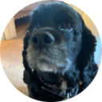

Hello.
I am my mom's best friend. I 💜chicken snacks. If it's not chicken, I don't want it.
My Skills.

Squirrel Protection
I diligently work on keeping the yard clear of any and all squirrel invasions. I'm back on the job after a work related injury that required surgery & 2 months of rehab.

Staying in Shape
Mom takes me for walks daily. My friends, Bob and Sue, fill in if needed. We only miss if it is raining, too hot for me, or too cold for mom. My favorite places to go are the Metroparks. There are deer and turkeys!!!
Get In Touch.
If you enjoy nature walking in parks, like I do.
We can discuss our favorite spots, see the links below for some of my faves.
CONTACT ME